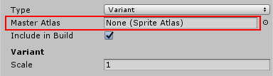
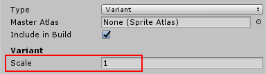

Sprite Atlas
When designing SpritesA 2D graphic objects. If you are used to working in 3D, Sprites are essentially just standard textures but there are special techniques for combining and managing sprite textures for efficiency and convenience during development. More info
See in Glossary and other graphic elements graphics for a 2D project, many separate texture files eventually become included in the project. However, a significant portion of Sprite textures may be taken up by empty spaces between each of these graphic elements. These additional empty spaces result in wasted video memory at runtime.
For optimal performance, you should pack graphics from several Sprite textures tightly together within a single AssetAny media or data that can be used in your game or Project. An asset may come from a file created outside of Unity, such as a 3D model, an audio file or an image. You can also create some asset types in Unity, such as an Animator Controller, an Audio Mixer or a Render Texture. More info
See in Glossary, called a Sprite Atlas (also known as a texture atlas, image sprite, sprite sheet or packed texture).
Creating a Sprite Atlas
Create a Sprite Atlas from the main menu (menu: Asset > Create > Sprite Atlas)
Once created, the Sprite Atlas is placed in the Project’s Asset folder like other Assets, but with its own unique file extension (*.spriteatlas).
Properties
The Sprite Atlas Asset provides a set of unified Texture settings for all packed Sprite Textures packed in it. Regardless of the original texture settings of the packed Sprites, the resulting single Atlas texture only reflects the settings defined in the Sprite Atlas Asset properties.
| Property | Function |
|---|---|
| Type | Sets the type of Atlas to Master or Variant. |
| Include in Build | Check to include the Atlas Asset in the build. Note that unchecking this option causes any packed Assets to not be rendered during Play Mode. |
| Allow Rotation | Allow Sprites to be rotated for packing. |
| Tight Packing | Use the Sprite outlines to fit them during packing instead of rectangle meshThe main graphics primitive of Unity. Meshes make up a large part of your 3D worlds. Unity supports triangulated or Quadrangulated polygon meshes. Nurbs, Nurms, Subdiv surfaces must be converted to polygons. More info See in Glossary outlines. |
| Padding | Amount of extra padding between packed Sprite textures. |
| Read/Write Enabled | Set to true to allow texture data to be readable/writeable by scriptsA piece of code that allows you to create your own Components, trigger game events, modify Component properties over time and respond to user input in any way you like. More info See in Glossary. Set to false to prevent scripts from reading/writing texture data. |
| Generate Mip Maps | Select this to enable mipmap generation. |
| sRGB | Textures are stored in gamma space. |
| Filter Mode | Select how the Texture is filtered. This overrides the packed Sprites’ original texture settings. |
| Default Texture settings panel | Set default options (using Default), and then override them for a specific platform using the buttons along the top of the panel. https://docs.unity3d.com/Manual/class-TextureImporterOverride.html |
| Objects For Packing | Select objects to be packed into the Atlas. Eligible objects can be Folders, Textures, and Sprites. |
Sprite Packer Mode Settings
The Sprite Packer mode settings are found under the Editor settings (menu: Edit > Project Settings > Editor). The select Mode determines how Textures from the Sprite Atlas are used within the Editor.
- Enabled for Builds: Sprites are packed into the Sprite Atlas for builds only, and not for Play mode.
- Always Enabled: Sprites are packed for Play Mode and Sprites resolve textures from the Sprite Atlas. However, Sprites resolve their textures from the original unpacked Texture during Edit Mode.
Always Enabled is enabled by default to allow the testing of packed Sprites loaded from an Asset Bundle during Play Mode.
Selecting Assets for Packing
The object types that can be assigned and packed into a Sprite Atlas Asset are folders, Texture2D, and Sprites.
Assigning a folder to the Sprite Atlas Asset includes all Sprites and Texture2Ds within that folder and its subfolders for packing. Assigning a Texture2D to the Atlas affects all instances of Sprites that references the same Texture2D. However, textures that are not referenced by a Sprite are not packed, and are not included in the Pack Preview.
To select Assets for packing:
Select the Sprite Atlas Asset. The list under Objects For Packing shows the currently assigned Assets to the selected Atlas. add them by either adding new entry to the list or dragging and dropping them from the Project onto the list area in the inspectorA Unity window that displays information about the currently selected GameObject, Asset or Project Settings, alowing you to inspect and edit the values. More info
See in Glossary. You can add the folders, textures, sprites to the atlas.
Add Assets by selecting the + icon at the lower right of the list. The Select Object window appears and shows the available Assets in the current Project that can be packed into ths Sprite Atlas.
You can replace any assigned object in the list by selecting the circle icon to the right. This opens the Select Object window.
Click “Pack Preview” below the list to preview the packed Sprite Atlas texture that includes all objects in the list.
All Sprite Atlases are packed before entering Play Mode (unless Include in Build is unchecked)
Creating a Sprite Atlas Variant
Declaring a Sprite Atlas as a Variant of another allows you to create a duplicate but resized version of the Master Atlas’ texture. This is useful if you want to have both a Standard and High Definition version of the same texture for example.
Set the Type for the Sprite Atlas to Variant.
Assign an atlas to the Master Atlas slot.
Set the scaling factor for the Variant. Value can be from 0.1 to 1.
To bind the Variant Sprite Atlas as the project’s default instead of the Master Atlas, check the Include in build option in the Variant and uncheck that option in the Master. Checking both to be included in the build is not recommended.
Runtime Sprites enumeration
The Sprite Atlas Asset has a runtime representation which can be accessed during Runtime.
Create a custom component that takes a “SpriteAtlas” as a variable.
Assign any of your existing Sprite Atlas to the field.
Enter play mode or run the player.
Access the variable and notice you can now call the property “.GetSprites” to get the array of Sprites packed in this atlas.
Late Binding
A Sprite can be started in runtime as “packed; but not referencing an Atlas”. It appears blank until an Atlas is bound to it. The late binding of the Sprite is useful if the source Atlas is not available during start-up, for example if the referenced Asset bundles are downloaded later.
Late Binding via callback
If a Sprite is packed into a Sprite Atlas that is not bound by default (e.g. Include in build is unchecked), then the Sprite appears invisible in the SceneA Scene contains the environments and menus of your game. Think of each unique Scene file as a unique level. In each Scene, you place your environments, obstacles, and decorations, essentially designing and building your game in pieces. More info
See in Glossary.User can listen to callback SpriteAtlasManager.atlasRequested.
This delegate method provides a tag of the Atlas which is to be bound, and a System.Action which takes in a SpriteAtlas Asset. The user is expected to load the Sprite Atlas Asset (e.g. by script references, Resources.load, Asset bundle etc.) and supply the Asset to the System.Action.
2018–07–30 Page amended with limited editorial review
2017–05–26 Page published with no editorial review
New in Unity 2017.1 NewIn20171
Did you find this page useful? Please give it a rating: